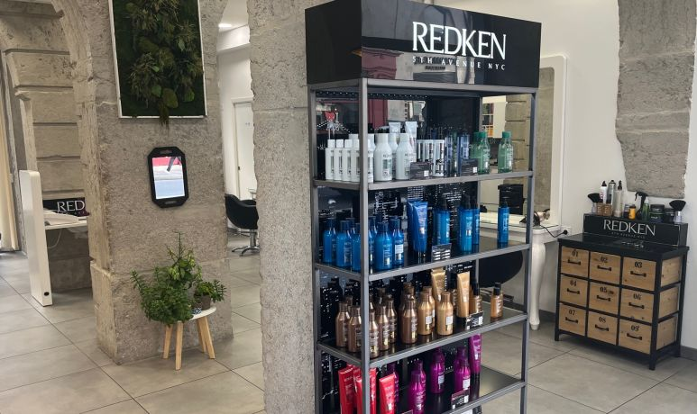

COIFFEUR MIXTE · LYON 2
Un nouveau regard
sur vos cheveux.
À deux pas de Bellecour, un salon de caractère pour votre prochaine coupe, votre couleur ou simplement le plaisir d’un brushing.
Réserver sur PlanityCoupe homme : 33 € · Brushing cheveux courts : 38 €
Tarifs repères · détails sur Planity.


 LA PIERRE. LA LUMIÈRE. LE STUDIO.
LA PIERRE. LA LUMIÈRE. LE STUDIO.01 / LE LIEU
Au cœur de Lyon.
À l’abri de l’agitation.
Des arches de pierre, une cour en perspective, quelques touches de vert. Le Studio Bellecour prend place au rez-de-chaussée de l’hôtel de l’Europe.
Un cadre singulier pour prendre un moment pour vous, que vous veniez entretenir votre coupe ou changer de tête.
Murat · Nisa · Diyar
02 / LES PRESTATIONS
Vos envies.
Votre prochain rendez-vous.
Quelques repères pour choisir.
Retrouvez le détail et les disponibilités sur Planity.
01Coupe & brushingdès 33 €
Pour rafraîchir une coupe ou redessiner une silhouette.
- Shampooing, soin & brushing · cheveux courts
- 38 €
- Shampooing, soin, coupe & brushing · cheveux courts
- 57 €
- Coupe homme
- 33 €
02Couleur & lumièredès 49 €
Couleur, balayage ou ombré : explorez les prestations techniques du studio.
- Couleur racines
- dès 49 €
- Couleur & brushing
- dès 99 €
- Balayage, coupe & brushing
- dès 280 €
- Ombré hair, coupe & brushing
- dès 280 €
03Soins & extensionssur Planity
Un soin en complément de votre prestation, ou un projet d’extensions à discuter au salon.
- Soin profond Redken
- dès 50 €
- Extensions
- sur devis
04Les grandes occasionsdès 85 €
Une coiffure pour accompagner votre événement.
- Coiffure événement
- 85 €
- Chignon mariage
- 250 €
Sélection de tarifs relevés sur Planity le 29 octobre 2026. Selon la longueur et la prestation. Les tarifs et conditions à jour sont ceux affichés sur Planity. Des forfaits enfants et étudiants y sont également proposés.

03 / RENDEZ-VOUS AU STUDIO
On se retrouve
à Bellecour.
1, rue Colonel Chambonnet69002 LyonPréparer mon itinéraire
Consultez les créneaux et réservez directement sur Planity. Pour confirmer les horaires du salon, appelez l’équipe.
Prendre rendez-vous